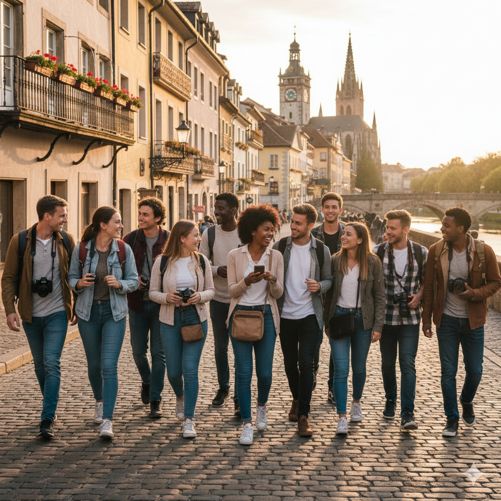

Transform Activities Into Understanding
UpTempo designs workshops, programmes and excursions for study-abroad groups in France — turning a destination into a lesson worth remembering, built on field knowledge, participatory formats and a genuine sense of place.

Four Principles Behind Every move
Every excursion, workshop or activity we design is built on the same foundations — regardless of destination, age group or subject.
Meaningful Experiences Memorable Moments
We design for memorable moments, not checklists of sights. Every stop earns its place because it makes an idea click, not because it's famous.
Insightful Perspectives Timeless Understanding
We favour questions over information. Participants leave with a way of looking at history, art or landscape they can reuse long after the trip.
Cultural Connection Authentic Contexts
Places are explored in their authentic context — local life, food and everyday culture sit alongside monuments and museums.
Organizational Support Expert Guidance
Coordinating transport, securing permits, anticipating the unexpected — that's my role. I'm present at every stage: beforehand to prepare your project with precision, on the ground to ensure everything unfolds without a hitch, and ready to adapt the plan if needed. Your peace of mind is my priority.
“Ask them a year later: the schedule will be gone. What answers is what we actually built.
Ways to Travel with UpTempo
From a two-hour workshop to a multi-day cross-region programme — there is a format that fits your educational needs, your timing and your level of energy.
Workshops
Focused sessions built to address one concrete need and go deep on a single theme. Workshops deliver a fast, tangible pedagogical boost—participants leave able to act, not just to know.
Visits
A single site, given the time it deserves — one museum, monument or landmark, explored in depth with a guide who makes the details make sense.
Full Days
A full day, paced the way your group needs it — one subject, several connected places, one continuous thread of discovery from morning to evening.
Escapes
Multi-day programmes chaining several destinations and themes into one continuous narrative — our flagship format. Available in two formats:
Round-trip by coach from Paris. Best suited to larger groups, or groups looking for comfort and ease.
High-speed train from Paris, with local coach transfers on arrival. Designed for smaller groups, it saves time and reaches destinations further afield.
“Two hours or five days—the format is never the ambition, only the shape the ambition needs to take.

Your Guide
Over 20 years of cultural mediation across museums, heritage sites and school programmes. A Master's in History and an MBA sit behind every itinerary — enough academic depth to be rigorous, and enough operational rigor to run smoothly on the day.
“Twenty years in the field is not a list of places seen—it is knowing what a group will need before they think to ask.
How We Build Programmes
Four steps turn a destination brief into a finished, field-tested programme.
Engineering
Educational excellence starts with intentional engineering.
- Define ambitious educational objectives.
- Engineer every sequence around those objectives.
- Build the right balance between learning, discovery, interaction and free time.
- Design a coherent experience rather than a succession of visits.
- Refine every detail through continuous field experience.
Narrative
Engagement begins with the right questions, not with more information.
- Connect the destination with contemporary issues.
- Challenge assumptions and common narratives.
- Stimulate curiosity through questions and discussion.
- Turn information into understanding.
- Keep participants intellectually engaged from beginning to end.
Learning Activities
Different learning objectives require different learning formats.
- Deploy dedicated learning formats for specific objectives.
- Alternate rhythm, interaction and reflection.
- Match the learning method to the group's energy.
- Use proprietary activities such as Pulse and Clutch.
- Maximize engagement while avoiding cognitive overload.
Field Knowledge
Exceptional programs are built on exceptional knowledge of the field.
- Build on first-hand knowledge of every destination.
- Identify opportunities invisible from a desk.
- Select places for their educational value.
- Recommend the best options for each group's objectives.
- Turn local knowledge into better educational experiences.
“Real learning happens in real places—and takes different forms depending on time, depth and rhythm.
Booster Activities
Four signature activity formats designed to advance your educational ambitions by seamlessly turning passive sightseeing moments into active, meaningful learning. Each format answers a different pedagogical intent — a key concept, a skill, or a moment that is both memorable and genuinely enjoyable — and is placed precisely where the itinerary needs it.
Pulse
Learning through action.
Move beyond observation and into participation. Pulse activities transform historical sites, neighborhoods, and cultural landmarks into interactive learning environments where students solve, create, investigate, and experience. Instead of simply hearing about history, they actively engage with it—making every lesson more memorable, meaningful, and fun.
Clutch
The one idea that changes everything.
Every destination has a handful of key concepts that unlock a much deeper understanding of its history and culture. Clutch sessions deliver these essential insights through engaging, interactive discussions that connect the dots, challenge assumptions, and give students the intellectual tools to interpret everything they encounter afterwards. Small ideas. Big breakthroughs.
Unbound
Break free from the ordinary museum experience.
Museums shouldn't feel like a race against the clock or a passive guided tour. Unbound invites students to explore at their own pace through carefully designed challenges, personal discoveries, and moments of curiosity. By giving them freedom, purpose, and ownership over their visit, museums become places of genuine exploration rather than obligation.
Echo
Moments that stay with you.
Some experiences are remembered long after the itinerary is forgotten. Echo activities create powerful emotional connections through stories, ceremonies, personal letters, meaningful silences, and shared reflection. These carefully crafted moments help students connect with people, places, and history on a deeply human level—creating memories that continue to resonate long after they return home.
“An activity is never a pause in the journey—it is the moment the journey starts to mean something.
Ready To Transform Your Journey?
Tell us about your group, your dates and what you'd like students or participants to walk away understanding. We'll come back with a tailored programme.